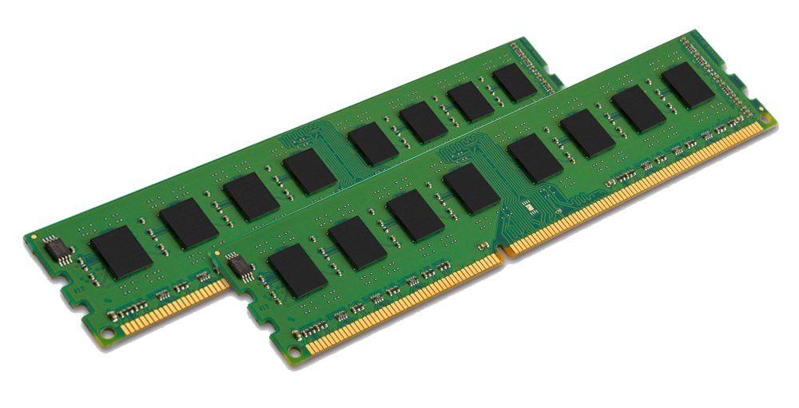

What is a computer?
To make it simple, a computer is something used for computing! Who would have guessed? Computers can be as simple as a house calculator, or a super high-tech supercomputer, such used by astronauts! The most usual computers we see are the ones we use at home. They can also hold or store information, which might look like regular language to us, but are actually just a bunch of 1’s and 0’s! How cool is that?
What are the purpose and benefits
Computers can do all sorts of stuff! The most common thing it’s used for today is to browse the internet to either communicate with people, or search the web to do research! The computer has slated itself as a necessity in everyday modern life.
Computers are used to do what a lot of normal people can’t!
 |
This is called a system unit.
It contains all the parts needed by the computer, while protecting them from foreign objects!
|
 |
This is called a monitor.
This is where we see everything that the computer does!
|
 |
This is called a printer.
It's a device we can use to print things, such as important documents!
|
 |
This is called a keyboard.
It's a device where we can type plenty of different symbols that will make up our alphabet! It's basically writing, but with less ink, and more button pressing!
|
 |
This is called a speaker.
It's a device we can use to listen to sounds, like music!
|
 |
This is called a mouse.
It's a device we can use so that we can easily navigate the things we see on the monitor. We can "select" things by clicking on them!
|
 |
This is called the microphone.
It's a device where we can talk into, and record our voices! It also lets us have a chance to talk with other people through the computer! Neat!
|
Let's open the system unit and see what's inside, shall we?
|
This is called the motherboard.
It's where all the parts of the system unit are connected, in order to communicate with one another.
|
|
This is called the CPU or the Central Processing Unit.
This is the so called brain of the computer. It handles all the computations and processes executed and done by the computer.
|
|  |
This is called the RAM or the Random Access Memory.
This is the primary memory used by the computer to process data. This memory is not permanent and the computer forgets the data written here after the program finishes.
|
 |
This is called the GPU or the Graphics Processing Unit.
This is generally used by gamers and art designers to process graphics faster. It takes the job of processing the graphics and lightens the workload of the CPU.
|
 |
This is called the HDD or the Hard Disk Drive.
This is the secondary memory where we can store our files. There are also portable variations called External Hard Drives.
|
|
This is called the SSD or the Solid State Drive.
This is faster than the HDD, but more expensive. This is usually used by computers so that their operating systems would load and work faster.
|
 |
This is called the CD-ROM.
We can insert CD's here to access or store data.
|
|
This is called the fan.
It's used by the CPU to prevent the computer from overheating. It get terribly hot inside the system unit, so fans are installed to save the day!
|
 |
This is called the PSU or the Power Supply Unit.
It's where the computer gets its power from!
|
Thinking like a Computer
Have you ever wondered why computers speak binary?
With all these 1's and 0's, they're very confusing to a lot of regular people, but to computers, they're as easy as one two three... so why is that?
Well, for computers, 1's and 0's are easy to understand because they only understand two states.
A state with electricity, and another without electricity.
The 1's stand for the states where they have power or electricity, whereas the 0's stand for the states where they DON'T have pwoer or electricity.
But wouldn't that mean that all computers are limited to think in only those two states? Wouldn't that be very limited? How does that work?
Well if we add another digit(called a bit), we can now have 4 states, namely: 00, 01, 10, 11.
And this can expand infinitely and programmers gave these states meaning so that we can recreate our language in the computer.
Counting in Binary
Counting in binary is actually really easy. It is just like normal counting but we are limited to using 1's and 0's. So, everytime we lack a means to represent a number, we just another bit! Here is an example of
how to count in binary with 4 bits.
| Decimal |
Binary |
| 0 |
0000 |
| 1 |
0001 |
| 2 |
0010 |
| 3 |
0011 |
| 4 |
0100 |
| 5 |
0101 |
| 6 |
0110 |
| 7 |
0111 |
| 8 |
1000 |
| 9 |
1001 |
| 10 |
1010 |
| 11 |
1011 |
| 12 |
1100 |
| 13 |
1101 |
| 14 |
1110 |
| 15 |
1111 |
Let's build a computer!
drag nIGGA drop those components!
Thank you for reading!
Have a nice day!
submitted by: Cyril Caballero, Stephen Hsiao, Clark Kong, Nixon Ong, Jasper Pillejera